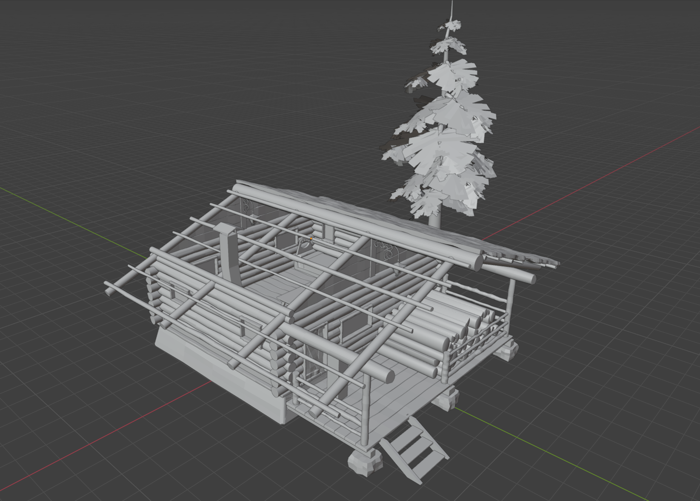
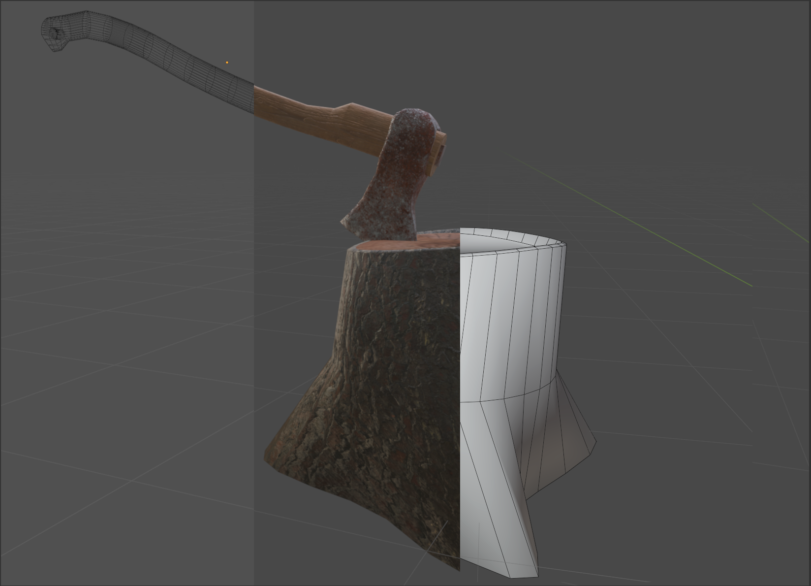

This my project Terminal velocitym, a platformer where time is life. It was implemented with unity 2D.
The main focus of this project was to create an immersive environment where the player feels trapped in an infinite forest. The goal was to evoke a sense of disorientation and tension, typical of a horror experience, using simple mechanics and strong environmental storytelling.
Before I started with the creation of this space, I first had to model the assets using Blender and apply textures by adapting materials found online and creating new ones in Substance Painter. Every model was kept optimized and consistent in style to support the dark and eerie atmosphere.
Once the assets were ready, I built the forest using Unity’s terrain editor. To enhance the mood, I created a fog effect with a custom particle system and implemented teleporters that would seamlessly move the player, giving the illusion of an infinite space. I also programmed the character’s movement, the door interaction logic, and adjusted the camera settings to reinforce the feeling of being trapped in a horror game.
The modeling process started by creating all the necessary 3D assets that would populate the scene. These included the main structure — a small wooden cabin — as well as a base tree model to populate the forest. I also modeled several decorative elements to enhance the immersive feel of the environment, such as an axe stuck into a tree stump, chopped firewood, and various interior props inside the cabin. These included a bed, a table, a fireplace, a barrel, a shield, and more. Each model was created with gameplay and atmosphere in mind, aiming to support the overall horror experience.
Once the modeling was complete, I moved on to the texturing phase. This began with carefully unwrapping UV maps for each object to ensure proper texture distribution. Many of the materials used were high-quality textures sourced online, which were adapted to fit the project’s style. However, a few key objects — such as the axe, the lantern, and the barrel — were textured manually in Substance Painter. These custom textures helped add detail and personality to the scene, making them stand out as focal points within the environment.


I designed a fog system using Unity's particle tools to create a layered, dense atmosphere. The fog consists of a particle system where each particle is a semi-transparent PNG image of a cloud. I carefully adjusted parameters such as size, density, spawn rate, lifetime, and movement speed to create a subtle yet immersive fog that enhances the feeling of being lost in a forest.
As for the teleportation mechanic, it was designed to reinforce the illusion of an infinite forest. The system is composed of four invisible "sender" walls that act as boundaries or paths. When the player's collider touches one of these invisible walls, they are teleported to a specific corresponding "receiver." Each receiver is an invisible cube (visible only in the development version) that constantly follows the player, either horizontally or vertically, depending on which sender was activated. This setup ensures that the player always reappears on the opposite side of the forest, in the exact relative position they exited from. This technique creates a seamless looped space that tricks the player into thinking they are wandering through endless environment.
This project helped me gain hands-on experience in Unity 3D, especially in environment construction using terrain tools, lighting, and particle systems to shape atmosphere and mood. I learned how to creatively use particles to simulate fog and enhance immersion, as well as how to implement teleportation mechanics to simulate non-linear, infinite spaces.
On the 3D side, I significantly improved my modeling skills with Blender by creating a variety of props, from buildings to environmental assets and interior elements. I also learned to work with UV unwrapping and texture mapping, applying both downloaded materials and custom-made textures using Substance Painter, particularly for hero objects like the axe, lamp, and barrel.
Beyond the technical aspects, this project taught me a lot about planning and pacing a solo game development workflow—from modeling and asset preparation to scripting interactions and building a cohesive scene. It also helped me develop a better understanding of how to guide player perception using layout, visual storytelling, and subtle mechanics that affect player navigation and emotion.